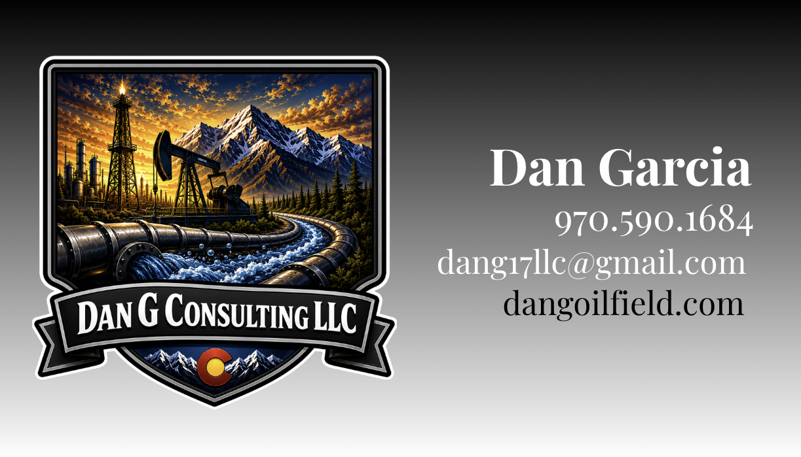

Dan G Consulting LLC
Oilfield Water Transfer Consulting Powered by Field Data
Dan G Consulting LLC brings full-circle water transfer support to oilfield operations through field experience, digital reporting, and tech-enabled job coordination.
- Field-tested
- Water-transfer focused
- Client-ready reporting

Live Field Window
Water Transfer
Modern field operations
Field Coordination. Digital Reporting. Real-Time Accountability.
Dan G Consulting brings a modern operations mindset to oilfield water transfer. From job readiness to daily updates and closeout documentation, every project is managed with clear communication, organized data, and field-tested execution.
Digital Field Reports
Daily job updates, photos, notes, delays, and completion records.
Water Transfer Tracking
Track source, destination, volume estimates, pump activity, and field status.
Vendor Coordination
Keep operators, pump crews, transfer teams, and service providers aligned.
Job Closeout Records
Clean documentation after the job: what moved, what delayed, what changed, and what needs follow-up.
Services
Tech-Enabled Oilfield Water Transfer Support
Practical field consulting backed by organized reporting, clear handoffs, and jobsite visibility from first call to final closeout.
Water Transfer Consulting
Planning, route review, pump coordination, hose layout, water-source planning, and job-readiness checks.
Field Operations Support
On-site supervision, crew communication, pump monitoring, safety observations, and daily updates.
Produced-Water Coordination
Support for produced-water movement, reuse planning, storage coordination, and vendor communication.
Digital Job Reporting
Daily field reports, photo logs, issue tracking, closeout summaries, and client-ready documentation.
Better field visibility
Built Around Better Field Visibility
DanG Consulting can provide organized field information so clients know what is happening without chasing phone calls all day.
Current Job
Transfer Window 24-118
Active
Job StatusActive
Water SourceConfirmed
Transfer RouteReviewed
CrewOn Site
Pump StatusRunning
Delay RiskLow
Daily ReportSubmitted
CloseoutPending
Operating framework
Built on 5 • 17 • 32
-
5
Core Promises
Safety, reliability, communication, accountability, and field execution.
-
17
Point Readiness Review
A pre-job checklist before water moves.
-
32
Point Closeout Standard
A structured report after the job is complete.
Why DanG
Old-School Field Experience. Modern Job Control.
- Field-first oilfield knowledge
- Digital reports instead of scattered texts
- Clear jobsite communication
- Tech-friendly documentation
- Water-transfer focused
- Built for operators, contractors, and field crews
- Better visibility from start to closeout
Availability
Need Water Transfer Support?
Send the job details, timeline, and service need. DanG Consulting LLC can respond with availability and next steps for field support.